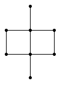

Each graph on the plane codes a knot or a link. For example, the triangle codes the trefoil knot:

Graphs are very easy to produce. A large class of them is even called "dessins d’enfants" (children’s drawings) by mathematicians (it’s my profession). Here is a graph: 
Its knot is a symbol of the Ming dynasty. The process to draw the knot it codes is in four steps:

- Put a crossing on the middle of each edge.
- Connect the bits of threads to one another.
- Sort out the over/under pattern.
- Thicken your design.
Here is another example:

 But let’s go back to a step by step on the Ming symbol. First, put a little crossing on the middle of each edge:
But let’s go back to a step by step on the Ming symbol. First, put a little crossing on the middle of each edge:
It is important to draw the crossings neatly so that there is no doubt about the direction a bit of thread points to. In particular, don’t simply tick the middle of the edge.

 You have to connect these bits of threads to one another in order for them to flow nicely without beginning and end. To do that, think of your graph as being a maze where each edge is a wall with an open door in the middle, where the crossing occurs.
You have to connect these bits of threads to one another in order for them to flow nicely without beginning and end. To do that, think of your graph as being a maze where each edge is a wall with an open door in the middle, where the crossing occurs.
 Choose a bit of thread, it points in a given direction. Follow the wall in that direction, turn the corner, follow the wall until you reach another crossing. One of its threads points towards you, it’s the one to connect to.
Choose a bit of thread, it points in a given direction. Follow the wall in that direction, turn the corner, follow the wall until you reach another crossing. One of its threads points towards you, it’s the one to connect to.

 At this stage, you need to straighten things a bit so that each thread flows nicely. But don’t do it too quickly, don’t try to guess too fast as mayhem will occur. So don’t be too smart and apply the rules.
At this stage, you need to straighten things a bit so that each thread flows nicely. But don’t do it too quickly, don’t try to guess too fast as mayhem will occur. So don’t be too smart and apply the rules.
Third, at every crossing, you have to decide which thread is over and which is under. You could set the first one arbitrarily and then follow it, under then over, then under, changing its status at each crossing along the way. That may work for small designs but it is unmanagable for larger knots. You end up with inconstistencies between parts of your drawing.
Fortunately, there is an easier way:
 Draw this little guide on a corner of a page and rip it off. Then, for each edge of your graph, place your guide alongside with both edges aligned. It will decide for you which of the two threads is over.
Draw this little guide on a corner of a page and rip it off. Then, for each edge of your graph, place your guide alongside with both edges aligned. It will decide for you which of the two threads is over.
Another way to look at it is to choose an edge, align that edge with your view, figuring yourself standing on a vertex and looking straight at the edge. Then, among the two threads crossing in front of you, one comes from your right, the other one comes from your left. Figurez yourself holding these threads with both hands, then cross your arms with (say) the left one above the right one.

Then inflate your knot. Think of the thread you just draw as the yellow line at the middle of a road, you need now to draw the left and the right side of the road. Be careful that at each crossing, there is a bridge, a road goes under the bridge and the other goes over. You should start by underlining the bridges so that you know where to start and where to stop.
Now you are ready for some exercices.
{kind=link}
{kind=link}
{kind=link}